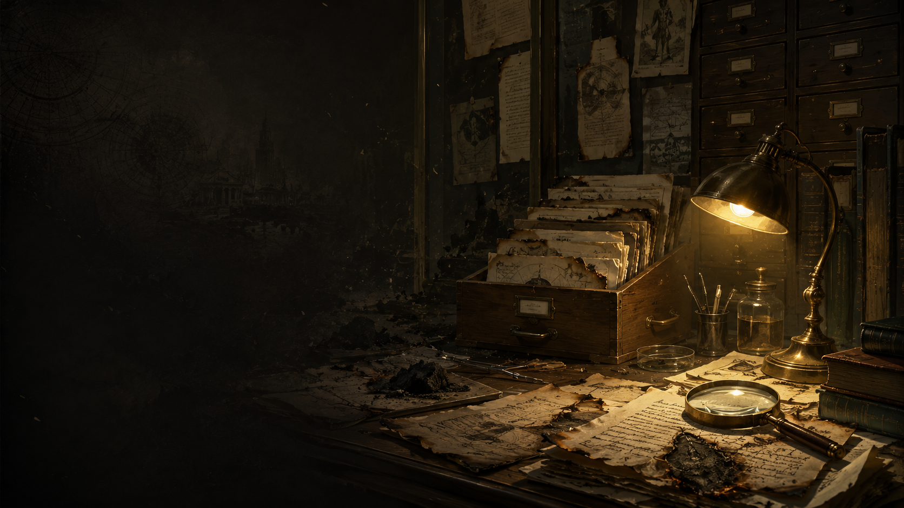
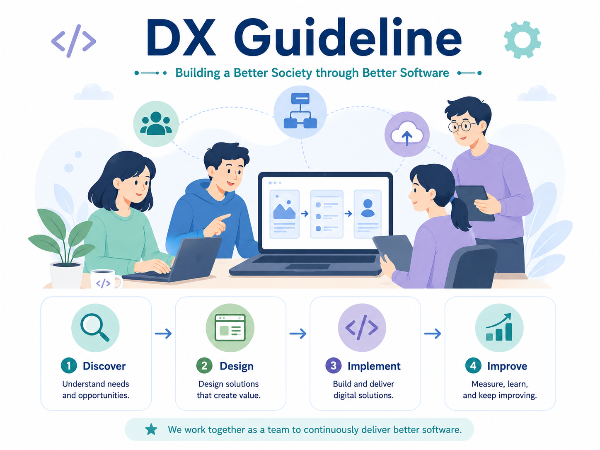
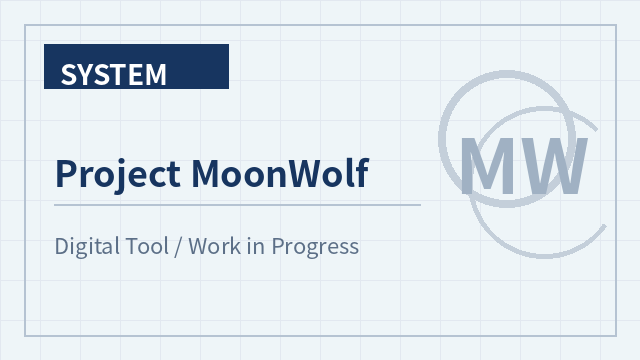
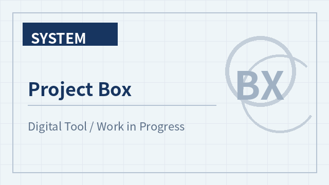
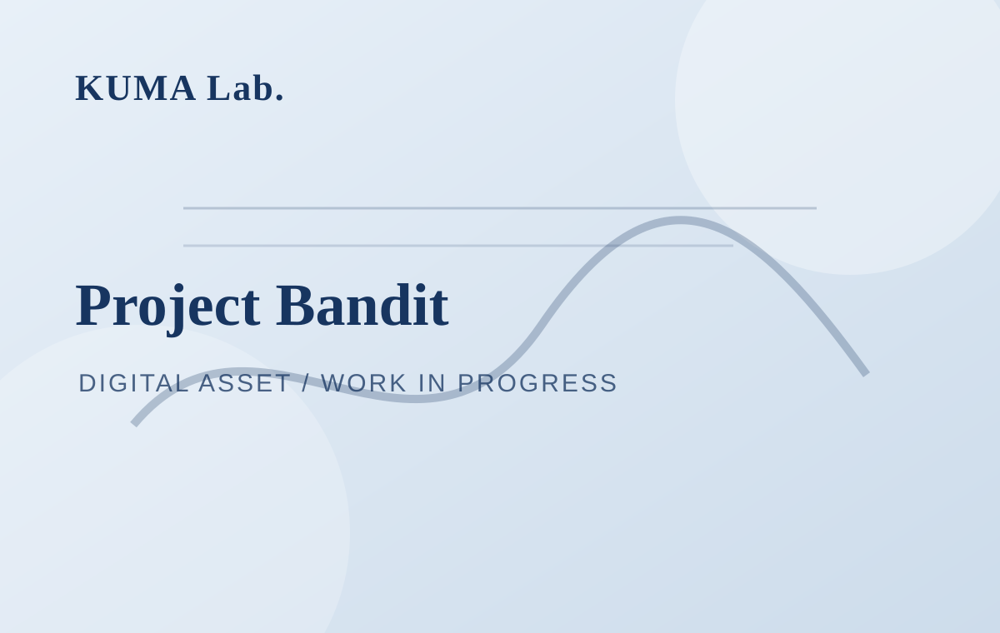

KUMA Lab. / Works
System
サイエンスや創作に関するデータベース、ツール、ゲームなどのデジタルアセット/コンテンツ開発活動
Back to Works →System Archive
作品・実践一覧
Philologia（科学 × 物語データベース）
後日公開予定。
2021年度CoSTEP修了式 選科Bのライブラリ
ライティングを学んだサイエンスコミュニケーターの卵たちが、科学やコミュニケーションを考えるヒントになる本を選んだライブラリ企画。
Project IngaRitsuko
制作中。因果推論をテーマにしたブラウザゲーム形式のインタラクティブ作品。

Project Scientia
制作中。科学史・人物カード・資料復元を扱うインタラクティブアーカイブ作品。

小説＝ソフトウェア仮説
エンジニアリングの視点から小説制作をとらえ直し、ソフトウェア開発の考え方を創作プロセスに接続する試論。

Project MoonWolf
制作中。後日公開予定。

Project Box
制作中。後日公開予定。

Project：Bandit
制作中。後日公開予定。